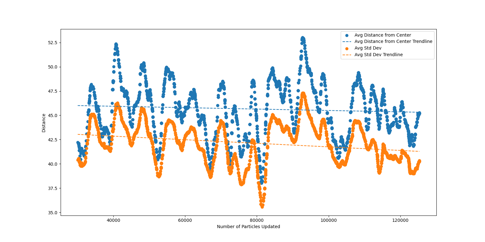
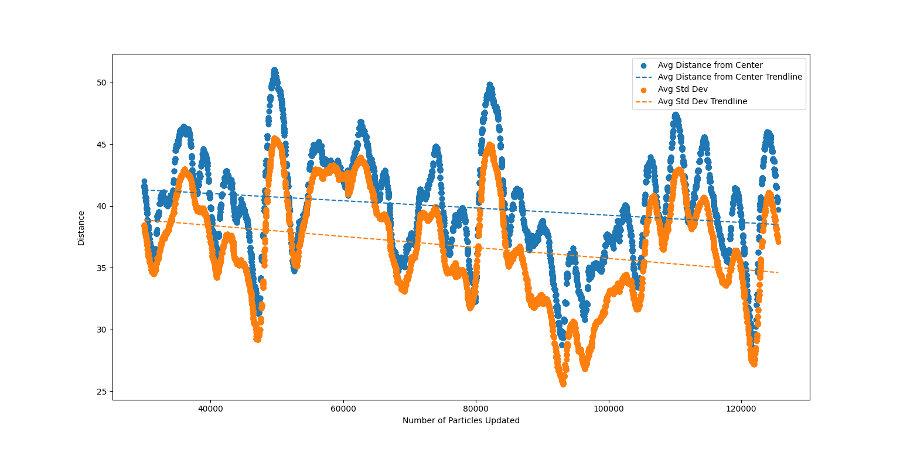
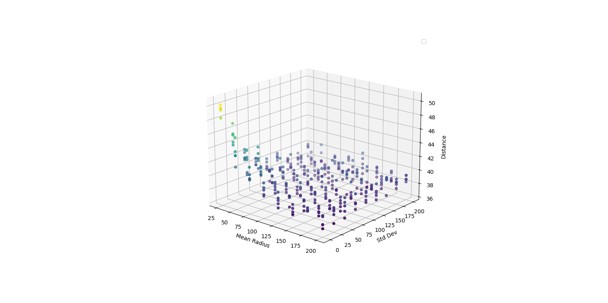
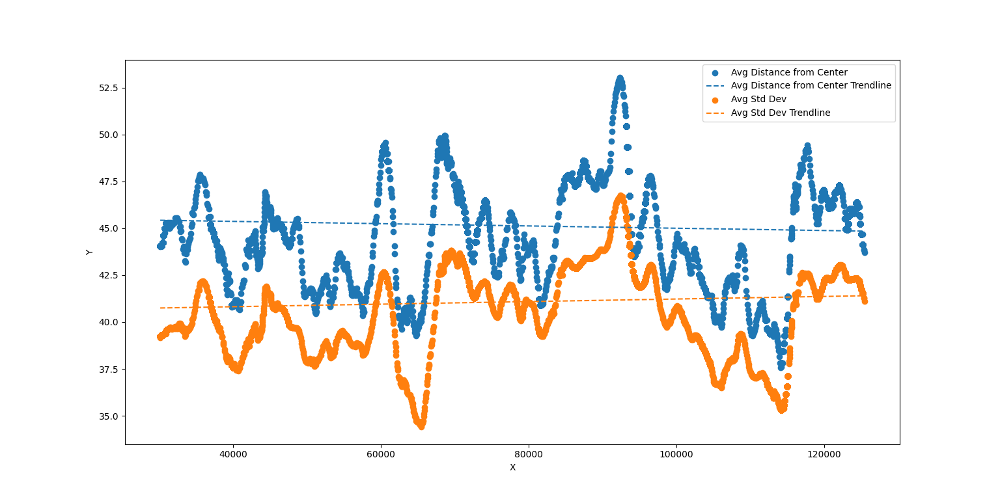

For the sake of curiosity, I threw out all of what I know about physics. Conservation of energy, gone. Symmetric forces, gone. Deterministic behavior, gone. Fundamentally, the demonstration below has very little to offer for those trying to learn physics because that is not what it’s intended for.
I was struck by an idea that I could not get out of my head, and I wanted to prove to myself that it makes sense whether or not it has any practical application besides the programming practice that I got making it. Could I create a logical explanation for something like gravity and time dilation where the first does not cause the latter but the latter causes the first? And could I convince myself that I could invent a computational reason behind why matter causes the latter?
Rather than being a rigorous exploration of the math they may be able to formalize these ideas, this article serves as a demonstration of using code to explore such problems even if they might not have any merit beyond that. The exploration itself and how programming can be used to verify these ideas is the point of this article. My hope is that this can inspire you to explore your own ideas, no matter how silly or absurd they may seem.
The basis of this “Stochastish Gravity” as I have decided to call it (in order to differentiate it from stochastic gravity, which is an actual thing) is that all particles feel a force from all other particles, but they are only allowed to experience this force in discrete and somewhat random time steps. Think of these time steps as the ticks of a clock. Each particle can only update its position when its clock ticks.
If all of the particles have the same clock, then we have the setup to a regular particle simulation. Because of computation limitations, particle simulations always progress in discrete time steps like this. 60 times per seconds, for example, the particles calculate the forces that they experience, their acceleration, then their velocity, which gives them their new position. Step by step, the simulation continues in this manner. If the time steps are small enough, these simulations give the illusion of continuous motion.
Below is the equation for the force that a specific particle i feels from every other particle. If you want to change which values are used in this equation, you can do so in the menu on the right side of the screen.
Note that the default coordinates, which are used for all of the simulations, are 0, 20, -20.
If you open the force graph using the menu in the bottom right of the screen. Notice that the values displayed end at a distance of 1. This is because the simulations clamp the distance to a minimum of 1 in order to prevent extreme values. You will notice this in the code below as well.
The equation gives us a good template for what to implement in the code. If you read the code provided below, you can find each part of the above equation represented. But we also have to bend the rules a little to prevent singularities and extreme forces when particles get very close to one another.
getForce(particles) {
let forceX = 0;
let forceY = 0;
for (let other of particles) {
if (other === this) continue; // j !== i
// Calculate distance components
const thisPosition = this.position;
const otherPosition = other.position;
let dx = otherPosition.x - thisPosition.x;
let dy = otherPosition.y - thisPosition.y;
let distSq = dx * dx + dy * dy;
if (distSq < 1) { // Prevent singularity and extreme forces
distSq = 1;
}
let dist = Math.sqrt(distSq); // Distance between particles (x^2 + y^2 = r^2)
let forceMagnitude = Force.calculateForceMagnitude(dist);
// Convert magnitude and direction to x and y components
let fx = (forceMagnitude / dist) * dx;
let fy = (forceMagnitude / dist) * dy;
// Accumulate forces
forceX += fx;
forceY += fy;
}
return { x: forceX, y: forceY };
}static calculateForceMagnitude(dist) {
dist = dist / Force.unit
return Force.coefficients.reduce((sum, coeff, idx) => {
return sum + coeff * (1 / Math.pow(dist, idx + 1));
}, 0);
}The Force.unit parameter defines how many pixels are in a unit. If it is set to 2, then there are 2 pixels in a unit, simulating a setup where all the particles are closer together.
Once we know the force on a given particle, we can compute the acceleration on that particle using Newton’s second law, F = ma, or a = F/m. The code for this is really simple. And the outcome is also really simple considering that all of the particles are defined as having a mass of 1, but I wanted to keep the code generic enough that I could change some of the masses later if I wanted to.
const acceleration = {
x: force.x / this.mass,
y: force.y / this.mass,
};Since the acceleration is the change in velocity over time, we can update the velocity of the particle by adding the acceleration to the current velocity. This is done in the code below. However, we mix in some extra parameters here to control how the simulation behaves. The damping factor controls how much energy is lost in the system each time a particle moves. If the damping factor is 1, then no energy is lost, and if it is 0, then all energy is lost. The temperature controls how much random velocity is added to the particle each time it moves. This is similar to the concept of temperature in real-world physics, where higher temperatures correspond to more random motion, but I will have this set to 0 for this whole article.
updateParticleVelocity(acceleration) {
this.velocity.x += acceleration.x;
this.velocity.y += acceleration.y;
this.velocity.x *= Force.dampening;
this.velocity.y *= Force.dampening;
this.velocity.x += getRandomBetweenMinusOneAndOne() * Force.extraTemperature;
this.velocity.y += getRandomBetweenMinusOneAndOne() * Force.extraTemperature;
}Finally, we can update the position of the particle by adding the velocity to the current position. This is done in the code below. updateElemPosition is a function to update the position of the HTML element representing the particle on the screen.
updateParticlePosition() {
this.position.x += this.velocity.x;
this.position.y += this.velocity.y;
this.updateElemPosition();
}In the menu on the right ride of the screen, you can also change the temperature and dampening constants shown above along with the force equation coefficients. I'd suggest changing them around and seeing how the simulation changes.
This is what we have in the first simulation below. Once per frame, all of the particles have their clocks tick.
As the simulation runs, you can see how the average position of the particles (shown in blue) changes. Because there are no external forces acting on these particles, the average position should not move from its original location (shown in green underneath the blue). These particles will just swirl around until they run out of energy (I added a small amount of damping to the system), but the simulation will cut off long before that happens.
Click anywhere within the simulation to start and stop it. Every time the simulation stops, a canvas will be displayed that shows the force direction (hue) and the magnitude (transparency). While hovering over the simulation, a button will appear in the top left. Clicking this button will reset the simulation.
The standard deviation of the particles' positions is graphed below the simulation. The distance between the 2 most distant particles, which I call the span, is also graphed. The data is plotted after a small delay to allow the simulation to stabilize a little.
While particles are updating they will be shown in yellow. Otherwise they will be shown in red. The green point is the average position of the particles, and the blue point is the current average position of the particles.
By messing with the parameters in the menu, you can generate some interesting simulations. But these are pretty standard simulations, so let's see what happens when we change when the particles are allowed to update.
Before we see that, let’s try to understand what the consequences of this would be. Most importantly, if the particles do not all tick at the same rate, then the forces between the particles will no longer be symmetric. For example, if we have two particles that feel an attractive force, the particle that ticks more frequently will have the ability to experience that force more often, and therefore it will appear as though it experiences a stronger force.
Extrapolating this concept, if we have a gradient of ticking speeds, then we would expect particles to move to areas where the ticking speed is slower (if the force is primarily attractive). This is very similar to one explanation of real-world gravity called the Law of Cosmic Laziness. Time moves slower in regions of high gravity, so the fact that matter is pulled into these regions by gravity makes matter tend to places where time moves slowest. The same thing happens in this simulation even without any built-in force of gravity. We replace gravity with a temporal gradient, and the particles move as though they are being pulled by a force.
In the simulation, we randomly select a square and tick all of the particles within that square. By changing the way we pick these squares, we can change where the areas of “laziness” are, and we can see whether the particles do tend to move in this direction. If we select the right side of the simulation more often than the left side, then the particles should move left, for example.
Change the options in the selection to change the gradient. If you select “Bias for High Values” for the x direction, squares on the right side of the simulation are more likely to be selected, and squares on the left side will be “lazy” and update less often.
When a square updates, it will flash green.
If you messed around with the simulation, you would have seen exactly what I described above happening. Setting a bias for lower values makes the particles move to the right. Setting a bias for higher values makes the particles move to the left. Setting a bias for middle values makes particles move either left or right like they’re rolling off of a hill.
If you are curious about how the biasing works, I have provided the code below. The Params.biases object contains functions that return a random number between 0 and 1 with the specified bias. The selection function for the simulation (which is defined by the space object) is updated whenever one of the dropdowns is changed.:
static biases = {
noBias: () => {
return Math.random();
},
lowBias: () => {
return 1 - Params.biases.highBias();
},
highBias: () => {
return Math.random() ** (1 / 2);
},
midBias: () => {
return (Math.random() + Math.random()) / 2;
},
outBias: () => {
let x = Math.random();
return x < 0.5 ? x * x * 2 : 1 - (1 - x) * (1 - x) * 2;
},
};const xBiasSelect = document.getElementById('x-bias-select');
const yBiasSelect = document.getElementById('y-bias-select');
const onInputChange = () => {
const xInput = xBiasSelect?.value ?? 'noBias';
const yInput = yBiasSelect?.value ?? 'noBias';
space.selectorFunction = () => {
const x = Params.biases[xInput]();
const y = Params.biases[yInput]();
return { x: x, y: y };
}
}
xBiasSelect.addEventListener('change', onInputChange);
yBiasSelect.addEventListener('change', onInputChange);Originally this is where I was going to end this article. I wanted to find an intuitive explanation of how time dilation causes gravity. Though this is not at all rigorous, it satisfied the thought I first had about this when I wondered whether time dilation caused gravity instead of the other way around. The “temporal gradient” causes particles to move in a certain direction as though they are being acted on by a force.
Imagine that there was a large planet just off of the left side of the simulation, its gravity would cause a gradient of ticking speed similar to what selecting “Bias for High Values” might look like, causing the particles to be “pulled” towards the planet.
But there is something lacking from this explanation: what is causing the temporal gradient? Why does space near the planet tick less often than space farther away? I wanted to see whether I could think of answers to these questions using the same framework as we have been using in this article.
From a very high level it makes sense that areas with fewer particles would take less time to tick. There is less to calculate, fewer forces to compute, fewer particles to move, etc. Would this be enough to get the particles to attract one another?
To answer this question, I modified the previous simulation so that each square takes a certain amount of time to tick based on the number of particles inside the square. But this did not give me a worthwhile result because it did not even create a temporal gradient.
The square that took a long time to tick did not attract other particles to it because the squares adjacent to it updated at a completely independent speed. This only created transient pockets of laziness that did not have any lasting effect on the particles.
After messing with this setup some more (increasing particle counts, increasing and correlating square sizes, etc.), I decided to take a different approach where the size of the update region is not constant.
In the simulation below, I pick a random point in the space of the simulation region. From there I pick a random distance. All particles within this distance will be marked as being updated. Once that is done, I repeat the process by picking a new point and a new distance. The particles that are marked as being updated will not be able to be selected again until they finish updating, which will happen after an adjustable delay.
This setup allows for a more far-reaching gradient to form because the selection region could be very large, but it still allows particles to be differentiated from one another because the selection region could be very small.
Before we add the computational component to this simulation, let’s get familiar with how this new setup works. In this example, whenever a circle is chosen, the particles within are immediately updated. There should be no gravity here because there is no gradient. This is our control.
Take note of the trendline for the standard deviation of the particles in this simulation. If this simulation functions the same on your browser as it does on mine, and if you have the default parameters, then the trendline should hover around 17. Keep this number in mind.
We need this number because if adding different ticking speeds into this simulation causes “gravity” to appear, then we would expect the particles to be pulled towards each other, resulting in a lower standard deviation of their positions.
So how can we add different ticking speeds to this simulation? The solution I went with is that, before the particles are allowed to update, they have to wait a time proportional to the square of the number of other updateable particles in the circle (but you can change this factor of proportionality in the menu under Prop). While they are waiting, these particles cannot be selected again.
When I first came up with this idea, I thought about it as multiple threads all selecting circles at the same time. Larger circles would naturally take longer to compute, meaning that particles selected within a dense region would take longer to update. I think that this is a much more natural explanation for this than manually waiting a length of time proportional to the square of the particles being updated, but this is the solution I came up with given the limitations of JavaScript.
The biggest part of this setup that irks me is that the length of time is proportional to the square of the number of particles being updated. Computationally, it doesn’t make sense that calculating the positions would not be proportional to the number of particles. I’m not sure what algorithm to compute the new positions could be inefficient enough to cause this effect, but I do think it’s funny to think that our reality (or this constructed reality that we are imagining) runs really inefficiently.
If you run the simulation below, hopefully you will see the standard deviation of the particles stay consistently lower than that of the above simulation.
After running both of these simulations, it looks like the theory I laid out does work as I expected, and I hope that you see similar results.
Because the implementation is based on a timeout in seconds and not a certain number of updates, the faster your browser is, the more other particles can be updated while a certain circle is waiting for an update. This might make the effect more pronounced on faster machines.
For me, the standard deviation hovers around 15, only rarely spiking over 20. Sometimes, though, the selection is quite unlucky, allowing many of the particles to update in quick succession. Because the steady state of this simulation looks to be more compact than the steady state of the previous simulation, when this happens, the particles explode outwards because of the pent-up pressure when they are all crammed together.
My hope is that as more particles are added into the simulation, it becomes less likely that one of these events happens.
Interestingly, it seems like the gradient simulation with the squares when it is set to have no selection bias has the largest average standard deviation at around 20 on my machine. The globally updating simulation has a standard deviation of around 17 for me, just like the first circle-based simulation.
To be a bit more rigorous about this, I ran 3 simulations for a set of values for the factor of proportionality for the wait time (which is set to 2 by default). I plotted the average and median standard deviations for all of the data in those simulations (each point in the graphs that are built while the simulation runs). My data is plotted below.
There are some interesting things to notice in this graph. Firstly, there is one run for each of the proportionality factors that has a much higher mean and median than the other 2 rus. This run was made while I was showing the simulation element in the DOM, which made the simulation much slower. I think that the increased computation time to update the DOM diminished the effect because there was less idle time. In an ideal world, the actual computation and simulation would be instant, meaning that the wait time is completely independent of the computation time.
Secondly, the mean was always higher than the median. This is probably due to the fact that all simulations start with the particles further apart than their equilibrium position, meaning that the standard deviation will be higher at the start of the simulation. The mean is more sensitive to these high values than the median, so it makes sense that the mean would be higher. Because of this, the median is probably a better representation of the steady state of the simulation.
As we would expect, the higher the proportionality factor, the lower the mean and median standard deviations. This makes sense because the higher the proportionality factor, the more pronounced the temporal gradient will be. Therefore, the stronger the "gravity" produced by the particles will be.
Interestingly, though, the data from proportionality factors below 1 did not seem to exhibit the opposite effect. I would have expected the standard deviation to be higher than that of the control simulation, but it seems to be about the same. My guess here is that the inverse effect (with denser areas updating faster) does not reinforce itself because these dense areas will tend to spread out, meaning that the density itself, which caused the fast update, will be reduced or destroyed. The effect is not self-reinforcing, so it does not have a lasting impact on the particles.
Meanwhile, the effect of denser areas updating slower is self-reinforcing because the particles are pulled closer together, making the area denser, which makes it update slower, which pulls the particles closer together, and so on.
What we’ve explored so far is only the first step down this path. There is a lot more that I could do to improve these simulations and get a better handle on how this could be applied or formalized. Since this project is openly available on my github, anyone reading this could also contribute. Here are some potential topics for further exploration:
Non-Stochastic Selection: It would not be too difficult to change the last simulations to not be random anymore. You could assign each particle a wait time based on the density in a small area around it. Each time the simulation updates, every particle has their wait time reduced by 1 and is only updated when the wait time is 0. After that, a new wait time is calculated. This is, I think, a more rigorous way of doing it, but it strays from the multi-threading idea.
True Multi Threading: Going back to my original conceptualization of this idea, it would be interesting to implement the last simulation in a language that supports multi-threading. That way you can determine whether gravity would arise simply from the differing speeds of updating different sized circles.
Mathematical Rigor: I have mentioned multiple times in this article that this is just a fun exploration of a silly idea, but my hope would be that it could somehow be formalized. While I do not have the skills to do that, hopefully one of you reading this will.
If you explore any of these concepts in any way, please do not hesitate to shoot me a message. You can contact me from my author’s site.
This is where this article ended when I submitted it to the Summer of Math Exposition 2025. As I was checking comments on my submission and seeing the score I got in the end (21st place), I decided to complete one of the items in the “Further Exploration” section above. I don’t really think this article is complete without actually implementing threading. I probably should have done it from the jump.
In the GitHub repo for this project, there is not a threaded folder containing much of the same logic as the JavaScript code but written in Python, allowing it to be truly multi-threaded instead of having the particles sit in “timeout” for a certain period of time dependent on the size of the selection they are a part of.
How this threaded simulation works is very similar to the Computational Gravity simulation. Firstly, we have a space that houses our particles. Then we choose a random circle within that space and “tick” each particle within that selection by updating their position and velocity. Particles currently being worked on are marked so that they cannot be selected again while they are updating.
The similarities make sense because the Computational Gravity simulation was an approximation of the threaded simulation. However, in actual threading, there are some extra considerations (but a lot of the hacky things I had to do to make the approximation work are no longer necessary).
Because all of the threads act on the same group of particles, it is crucial that access to the particles (and any other shared data) is correctly thread locked so that only one thread is reading or writing to the data at one time. If this is not done, then the threads would not share a common understanding of the data because the data could have changed while a thread is using it.
For the Particle class, I implemented this by having each particle implement a locking mechanism that threads have to get past before it can be updated. When we try to update the selection, we loop through all of the particles within the selection and attempt to acquire that particle. Only particles that the thread successfully acquired will be updated by that thread. Once the particles are updated, they are released so that other threads can acquire them.
class Particle:
def __init__(self, pos, v):
self._lock = threading.Lock()
self._owner = None
def acquire(self, blocking=True):
got_it = self._lock.acquire(blocking)
if got_it:
self._owner = threading.get_ident()
return got_it
def release(self):
if self._owner != threading.get_ident():
raise RuntimeError("This thread does not own the lock")
self._owner = None
self._lock.release()
def update(self, force):
if self._owner != threading.get_ident():
raise RuntimeError("This thread does not own the lock")
self.updateParticlePosition()
acceleration = {
'x': force['x'] / self.mass,
'y': force['y'] / self.mass
}
self.updateParticleVelocity(acceleration)Inside the Circle class, which is the object that does particle selection, you can see exactly the structure I explained above. Acquiring then updating and then releasing.
class Circle:
def update(self):
particles = self.getParticles() # Acquiring happens in here
forces = [p.getForce(self.particles) for p in particles]
for i, particle in enumerate(particles):
force = forces[i]
particle.update(force) # Updating
for particle in particles:
particle.release() # Releasing
def getParticles(self):
cy = self.y
cx = self.x
r = self.r
particles_inside = [
particle for particle in self.particles
if (cx - particle.position['x']) ** 2 + (cy - particle.position['y']) ** 2 < r ** 2
]
particles_updateable = []
for particle in particles_inside:
if particle.acquire(False): # Acquiring
particles_updateable.append(particle)
return particles_updateableThe rest of the machinery to make the simulation run is not terribly interesting, so I will just move on to the results.
Honestly, I was somewhat scared of what the results of this simulation were going to be. Everything made sense in my head, so one part of me was sure that I would see a pseudo-gravitational effect. But the fact that I had to manually make the factor of proportionality in the computational gravity simulation to 2 made me wonder whether threading alone would be enough for the effect to appear.
However, when I ran the simulations, it was immediately clear that the theory I’ve been building throughout this article is correct and that the effect is much more evident than in the JavaScript approximation.
As evidence of this, I plotted a couple of graphs, and I encourage you to run the python code yourself to see whether or not you get the same results. You can find instructions on how to run the code here.
Note that the force equation for all of these python simulations is of the same form as the simulations on this page, but the coordinates are 0, 20, -50, 20
Below is a graph very similar to the graphs that are created when running the simulations on this page. This graph shows a simulation with a single thread. Of course, I cannot run the simulation here, so this will have to suffice.
The average distance from the center of the particles hovers around 46 for the whole simulation. This is our control because a single thread will not cause a stable temporal gradient, so the pseudo-gravitational effect should not appear.
Contrast this with the same type of plot for 2 threads (shown below). Even with just 2 threads, the effect is clear to see: the average distance from the center hovers around 41.
What’s nice about writing these simulations in python is that it is really easy to set up a script that runs a bunch of simulations and records the results of those simulations for plotting. These next few graphs that I will be showing just plot the average of the average distance from the center across all points in plots like the two above.
Using this metric, we can investigate the different parameters of the simulation. Specifically, I wanted to investigate 3 things.
Thread Number: What is the trend as we increase the number of threads executing the simulation? Will the distance continue to decrease when we go past 2 threads? Or will there be some cut off where the distance goes back up?
Average Selection Radius: What radius results in the strongest effect? Will we run into issues where the pseudo-gravitational force does not have large enough of a range to cause the effect? If the radius is really large, will the effect diminish?
Standard Deviation of the Selection Radius: Does it matter whether or not the selections are different sizes?
The first thing I tested is how the number of threads changes the average distance. We already have some evidence that 2 threads lowers the average distance from 1 thread, but here is a graph with 1 up to 8 threads.

As you can see from the graph above, the average distance from the center or the spread of the particles decreases as we increase the number of threads. Perhaps going past 8 threads would reverse this trend. If you want to investigate this, there is a tester.py script that you can modify to get the result. For repeatability, the values used for the mean radius and the standard deviation for the radius were 100 and 50 respectively.
If we want to run tests on the radius and standard deviation, it makes sense to do that in one shot because the two parameters are interlinked. As such the graph below is a 3D plot where both the mean and standard deviation vary. The y-coordinate is the average distance.
I find this graph really interesting because it seems like as long as the selection has the possibility of being large enough (either by having a large mean or a large standard deviation), the distance drops out. The specific values do not really seem to matter all that much.
With that being said, though, logically it makes sense for there to be a limit to how large the radius can get before the results reverse and the distance begins to grow again.
For example, if the radius is double the size of the simulation and the standard deviation is 0, then each selection will select all of the particles that are available to be selected, no matter their positions because the selection will always encompass the entire available space. This would logically eliminate any temporal gradient and eliminate the effect.
For context, the simulation dimensions are 1200 by 800, and the center of the selection circle is guaranteed to be within this space. This means that we'd just need a radius a little larger than the simulation to be certain that it will contain all particles (assuming that no particles leave the simulation, which I do not enforce).
As a sanity check, I tested this idea, and the results are in the graph below (a run with the mean set to 10,000). And just like I expected, the average distance was once again hovering around 45, just like it was for the single threaded simulation even though I ran this simulation with 2 threads.
It would be interesting to see at what point the trend reverses. My guess is that it has to do with the proportion of particles that land within a certain selection each time the selection occurs. If only a single particle is selected each time (as could be the case in the peak of the 3D graph), then the temporal gradient cannot form or will be too localized to have a large effect. However, if all but 1 particle are selected, then the gradient will be so blurred as to be almost global or constant.
My instinctual guess is that an ideal proportion would be the radius that would best divide the particles among the threads, but I have no way of confirming this assumption. What do you think?
My hope is that this exploration was interesting even if it was not rigorous. If anyone reading this has the technical know-how to formalize this concept in a mathematical way, I would love to know what some consequences of this sort of gravity would be if it were to work this way in an actual setting. I think it would be interesting to use this sort of gravity in the setting of a story and explore what consequences this would have for the characters, and maybe I could even incorporate it into some of my ongoing writing projects, which you can find here. That page also has a form to contact me if you have any ideas or want to contribute to this exploration.
And if you are interested in the underlying programming for these simulations, you can either dig into it with your browser's Dev Tools, or you can view the code on my GitHub.